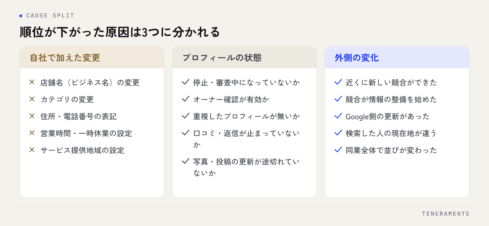

Googleマップの順位が急に下がったとき、いちばん危険なのは原因が分からないまま情報を何か所も書き換えることです。順位が落ちる原因の候補は限られています。見る順番さえ決めておけば、何が起点だったかはその日のうちに絞り込めます。
📌 この記事の結論
Googleマップの順位が下がった原因は、自社で加えた変更・プロフィールの状態・外側の変化の3つに分かれます。まず自社が直前に何を触ったかを洗い出すのが最短です。心当たりがない場合だけ、プロフィールの状態と外の変化を順に見ていきます。
01順位が下がる原因は、自社・プロフィール・外の変化に分かれる
原因を並べると無数にあるように見えますが、実際には次の3つのどれかに収まります。

ひとつめは自社で加えた変更です。店舗名や住所の表記を直した、カテゴリを変えた、営業時間を更新した、写真を大量に入れ替えた。直前の操作が起点になっているケースが最も多く、そして最も見つけやすい原因です。
ふたつめはプロフィールそのものの状態です。停止（サスペンド）や審査中になっている、重複したプロフィールが生まれている、オーナー確認が外れている。この場合は順位が下がったというより、表示される資格を失っている状態に近くなります。
みっつめが外側の変化で、競合が対策を始めた、Google側の更新があった、検索する人の場所が変わった、といったものです。自社では動かせない要因が含まれるため、最後に見ます。
この順番を守る理由は、上の2つが片付かないと3つめの判定ができないからです。プロフィールが停止しているのに競合分析をしても意味がありません。
02確認する順番を決める
原因の切り分けは、上から順に「問題なし」を確定させていき、引っかかったところで止めて直すのが最短です。実際に見る順番は次のとおりです。
- 本当に下がったのかを数字で確かめる（自分で検索した結果では判断しない）
- 直前に自社で触った箇所を洗い出す（変化の起点の日付と照合する）
- プロフィールの状態を見る（停止・審査中・重複・オーナー確認）
- 口コミや投稿の動きを見る（更新が止まった時期と重なっていないか）
- 外の変化を見る（競合の動き、Google側の更新）
上から順に見る理由は、上の段が壊れていると下の段の判定ができないからです。表示回数がそもそも落ちていなければ、原因を探す必要すらありません。各項目の具体的な見方はこのあとのセクションで扱います。MEO全体の考え方はMEO対策の完全ガイドに整理しています。
03まず「本当に下がったのか」を確かめる
自分でスマートフォンから検索した結果は、順位ではありません。ここを飛ばすと、起きていない問題を追いかけることになります。
マップの表示順位は、検索した人の現在地によって大きく変わります。店舗の近くで検索すれば上位に出て、少し離れると出てこないのは通常の動きです。自社の店内で検索して確認していた人が、自宅から検索して「下がった」と感じるケースは珍しくありません。
ログイン状態や検索履歴の影響も受けます。確認するときは、ビジネスプロフィールの管理画面で、検索に表示された回数やマップの表示回数といった数字の推移を見てください。順位という1つの数字ではなく、表示回数と行動数（ルート検索・電話・サイト訪問）がいつから落ちたかを見ると、変化の起点の日付が分かります。
起点の日付が特定できれば、その前後に自社が何をしたかを照合できます。ここまでが調査の土台になります。
04直前に自社で何を触ったかを洗い出す
起点の日付が見えたら、その前後の操作を棚卸しします。順位に影響しやすい変更は決まっています。
- 店舗名（ビジネス名）の変更：看板や登記と違う名前、キーワードを足した名前は違反として扱われます
- カテゴリの変更：メインカテゴリを変えると、表示される検索そのものが変わります
- 住所・電話番号の表記：サイトや他の掲載先と食い違うと、同じ店舗だと判断されにくくなります
- 営業時間：臨時休業や「一時休業中」の設定が残っていると、表示が大きく落ちます
- サービス提供地域：エリア設定を広げすぎると、かえって絞り込まれることがあります
店舗名にキーワードを足していないか
「店舗名＋地域名＋サービス名」のようにキーワードを詰め込んだ名称は、Googleのガイドラインで認められていません。一時的に効いたように見えても、修正や停止の対象になります。実在する看板どおりの名称に戻してください。
複数人で管理している場合は、自分以外の操作も確認します。管理画面のオーナー・管理者一覧を見て、心当たりのない権限が増えていないかもあわせて見てください。
05プロフィールの状態を確認する
自社の操作に心当たりがない場合、次はプロフィールの状態です。ここは判定がはっきりします。
確認するのは3点です。まず停止・審査中になっていないか。管理画面に警告や審査中の表示が出ていれば、順位の話ではなく復旧の話になります。次にオーナー確認が有効か。確認が外れると、情報の一部が反映されなくなります。そして重複したプロフィールが存在しないかです。
重複は、移転時に新しく作り直した、複数の担当者がそれぞれ登録した、といった経緯で生まれます。同じ店舗の情報が2つあると評価が分散し、どちらも上がりにくくなります。見つけたら統合を申請してください。
順位が下がったように見えるとき、実際には「表示される資格」の側が止まっていることがあります。
06口コミ・写真・投稿の動きを見る
プロフィールが正常なら、次は日々の運用側です。ここは順位そのものより、選ばれる確率に効きます。
見るのは、口コミが一定期間まったく付いていないか、返信が止まっていないか、低評価が続いていないか、写真や投稿の更新が途切れていないかです。更新が止まった時期と、数字が落ち始めた時期が重なっていないかを照合してください。
口コミが削除されて件数が減っていることもあります。ガイドライン違反と判定された口コミは、投稿者側の問題であっても消えます。件数の減少自体は自社では止められないので、削除を追うより、新しい口コミが入る流れを戻すほうが現実的です。低評価への向き合い方は評価の低い口コミへの対応にまとめました。
07外の変化を見る：競合とGoogle側の更新
ここまでで原因が見つからない場合、外側の変化を疑います。ただし、自社側を確認し終えてから見ることが前提です。
競合側では、新しい店舗が近くにできた、既存店が口コミ集めや情報の整備を始めた、といった動きがあります。自分の順位が下がったのではなく、相手が上がった結果として押し出されている状態です。この場合、対策は通常のMEOと同じで、特別な緊急対応はありません。
Google側の更新は、特定の地域や業種でまとめて順位が動く形で現れます。判断の目安は、自社だけが落ちたのか、周辺の同業も含めて並びが変わったのかです。同業全体で並びが変わっているなら、個別の施策ミスではない可能性が高くなります。この場合は数日から数週間の様子見をはさみ、その間に情報を触りすぎないほうが安全です。
通常の検索（マップ以外）でも同時に落ちている場合は、サイト側の問題が混じっていることがあります。切り分けの手順は検索順位が上がらない原因を参照してください。
08原因別の直す優先度
確認が終わったら、見つかった状態に応じて着手の順番を決めます。
| 見つかった状態 | 緊急度 | 対応 |
|---|---|---|
| プロフィールが停止・審査中 | 最優先 | 再審査を申請。復旧するまで他の施策は保留 |
| 重複プロフィールがある | 高い | 統合を申請し、正しい1件に情報を集約 |
| 店舗名がガイドライン違反 | 高い | 実在する名称に戻す。放置すると停止につながる |
| 一時休業・営業時間の誤り | 高い | 設定を戻す。反映まで日数がかかる場合がある |
| カテゴリ変更が起点 | 中くらい | 元のカテゴリに戻し、しばらく変えない |
| 口コミ・投稿が止まっている | 中くらい | 運用を戻す。急な巻き返しは狙わない |
| 競合の動き・Google側の更新 | 低い | 通常のMEOを継続。触りすぎない |
やってはいけないこと
順位が下がった直後に、店舗名・カテゴリ・住所を一度に書き換えるのは避けてください。変更が重なると、どれが効いたのか分からなくなるうえ、短期間の頻繁な編集そのものが審査の対象になります。直すのは1か所ずつ、反映を待つ期間を決めてからにします。
日常の運用手順を一から組み直したい場合は、MEO対策を自分でやる方法に基本の流れをまとめています。
09まとめ：下がったときほど、触る前に確認する
Googleマップの順位が急に下がった原因を探すときに必要なのは、新しい施策ではなく確認の順番です。本当に下がったのかを数字で確かめ、直前に自社が触った箇所を洗い出し、プロフィールの状態を見て、最後に外の変化を見る。この順で進めれば、どこが起点だったかは絞り込めますし、無関係な場所を書き換えて状況を悪くすることもありません。直すのは1か所ずつ、反映を待つ期間を決めてから。これだけで、次に何かが起きたときの判断材料も残ります。
TENERAMENTEは、ビジネスプロフィールの状態確認から日々の運用までを一貫してお手伝いしています。今どこで止まっているのかの切り分けから始められるよう、対応できる範囲をMEO対策にまとめました。自社で確認してみたものの原因が絞りきれない、という段階でも構いませんので、ご相談からお気軽にお声がけください。